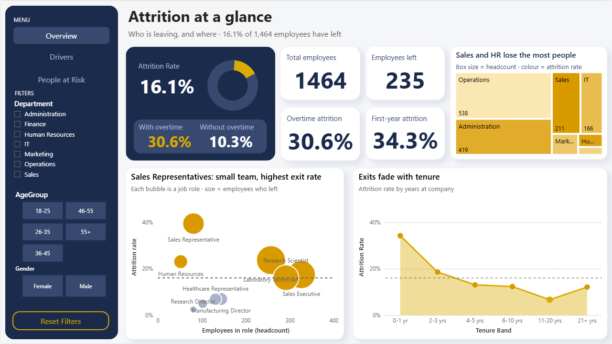
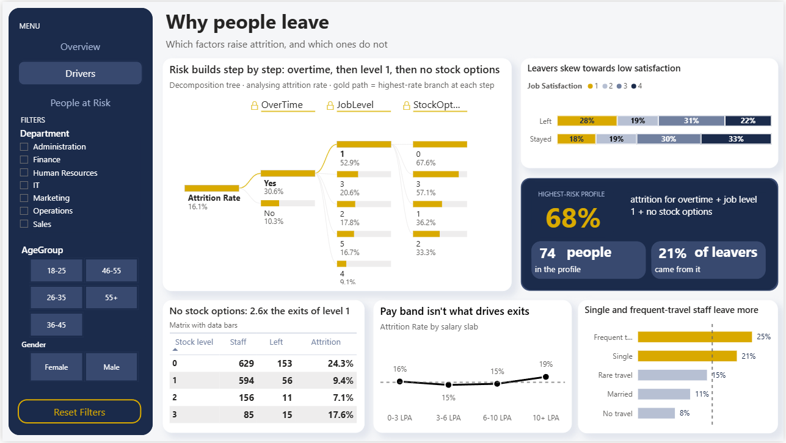
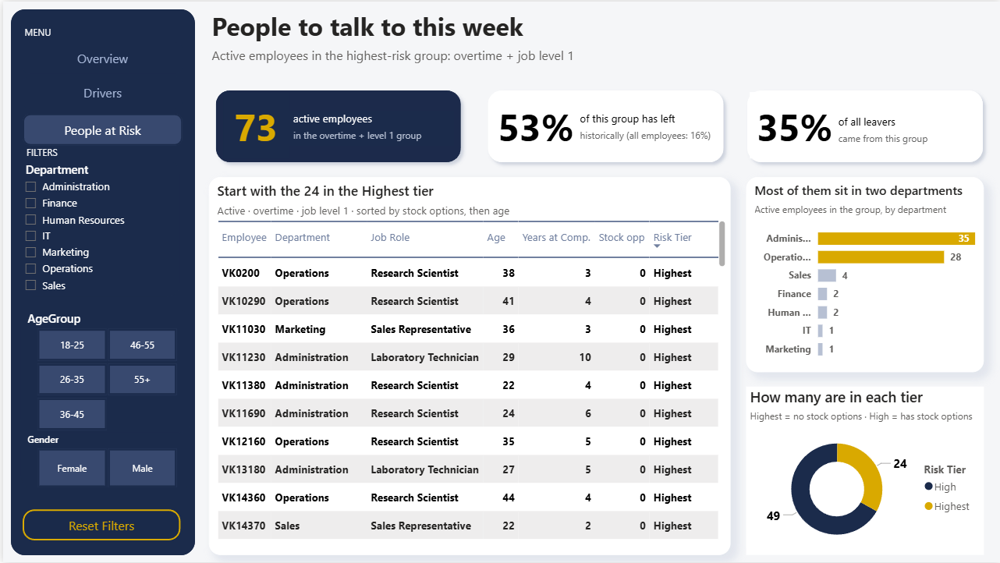

Most HR dashboards report attrition by department and salary band and stop there. I wanted to find which factors actually separate people who leave from people who stay, and then turn that into a list of current employees worth talking to. The report has an overview page, a drivers page built around a decomposition tree, and a people-at-risk page.
Power BI · DAX · Power Query
HR attrition analytics
A three-page Power BI dashboard on 1,464 employees: who leaves, which factors raise the risk, and which current employees to talk to first.

Page 1, attrition at a glance: headline rate, departments, job roles, tenure, and overtime by age group.
Overview
Key findings
30.6%attrition for staff who work overtime, against 10.3% without it — 3× the rate, and 54% of all leavers did overtime
34%of first-year hires left (73 of 213), the highest of any tenure band
64%attrition for 18–25-year-olds who work overtime, against 23% for the same age group without it
39.5%attrition for Sales Representatives, about 2.5× the company rate of 16.1%
15–19%attrition in every salary band — pay band does not separate leavers from stayers
68%attrition for staff with overtime, job level 1 and no stock options: 74 people, 21% of all leavers
Each step adds one factor to the group, which is how the decomposition tree on page 2 finds the highest-rate path.

Page 2, why people leave: decomposition tree, satisfaction of leavers vs stayers, stock options, and pay band.
Recommendation
- Review overtime workloads, starting with junior staff and the Sales Representative role, where the rates are highest.
- Support first-year hires with a structured onboarding and a check-in before the six-month mark.
- Look at stock-option eligibility for new joiners. Level 0 staff leave at 24%, against 9% at level 1.
- Do not rely on pay rises as the main lever. Attrition is flat across salary bands.
- Start with the 73 active employees in the overtime and job level 1 group, 24 of whom have no stock options.

Page 3, people at risk: the active employees to talk to first, grouped into risk tiers.
How it's built
- Power Query: removed 16 duplicate employee IDs (1,480 to 1,464 rows), fixed inconsistent travel labels, dropped three columns that never vary, and kept 61 rows with a blank manager-tenure field instead of deleting them.
- DAX: attrition rate, overall benchmark rate, overtime and first-year rates, and the measures behind the risk profile and the at-risk group.
- Visuals: treemap, bubble chart, area chart, small multiples, decomposition tree, stacked bar, matrix with data bars, and a table with risk-tier tags.
- Design: every chart compares rates, not counts, against a dashed overall-average line. One accent colour is reserved for the problem, and chart titles state the finding.
Limits of the data
The data is one snapshot with no dates, so it can't show trends or why someone left. It shows association, not causation, and some groups are small (stock option level 3 has 85 people). The risk tier is a rule, not a prediction model. Page 3 lists named employees, so in a real setting it would sit behind row-level security.
What I'd add next
Train a model (logistic regression or gradient boosting) to score each active employee instead of using a fixed rule, then add manager, promotion and exit-reason data so the dashboard can say why people leave and not only who does. Adding the cost of replacing an employee would let me size the savings from each action.